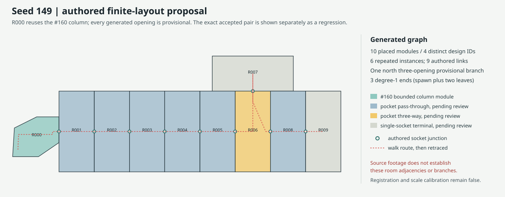
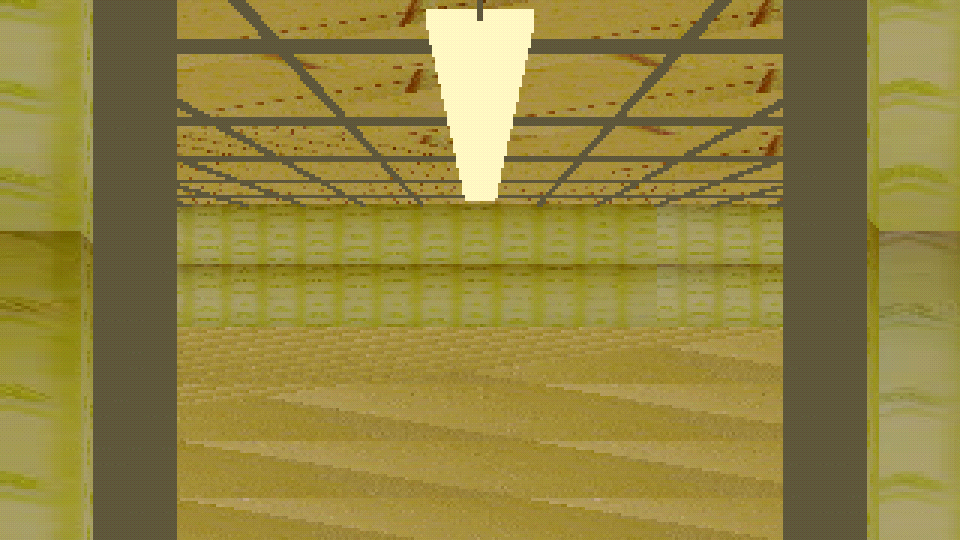
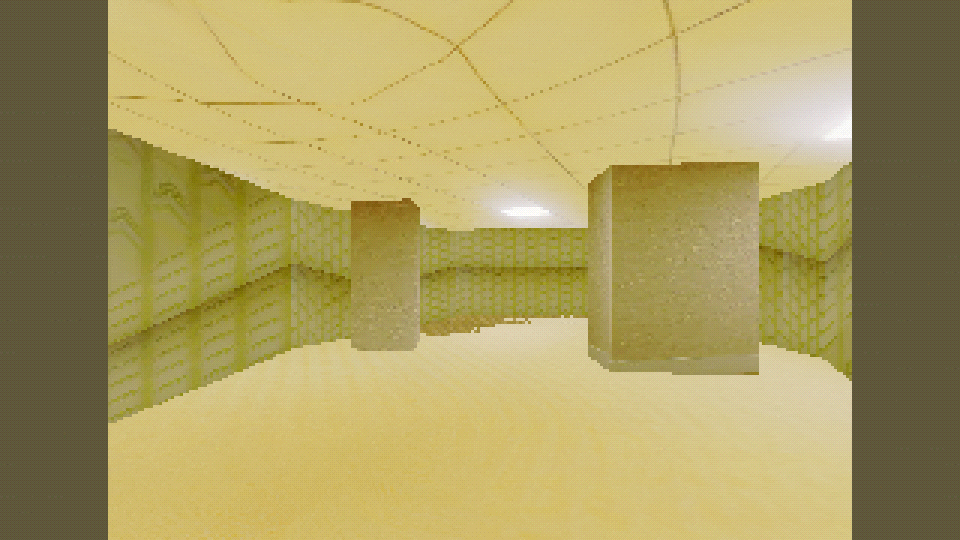
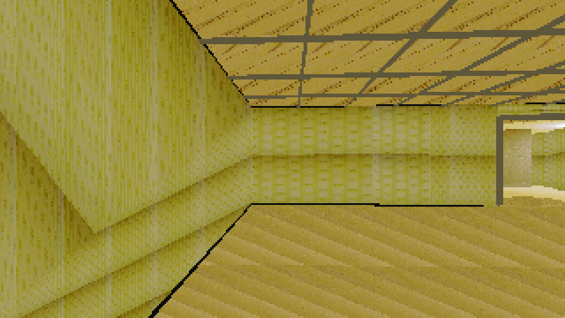
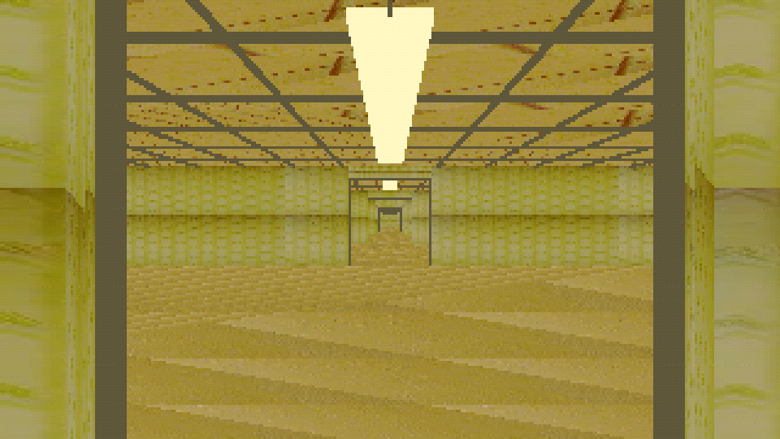
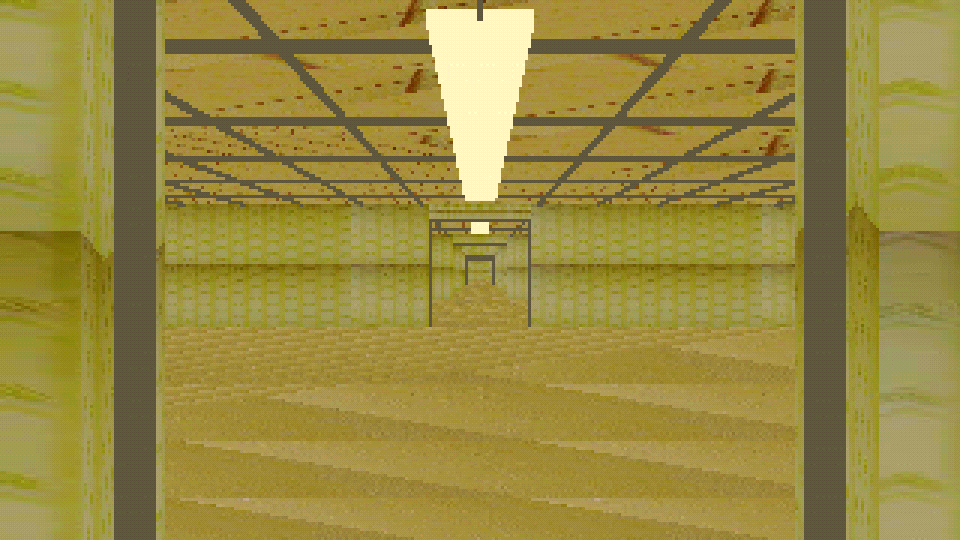
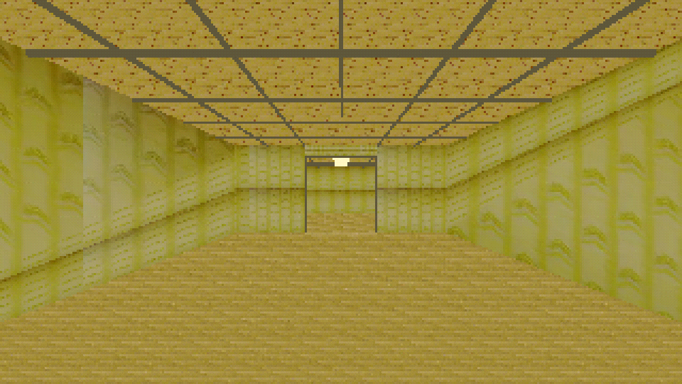
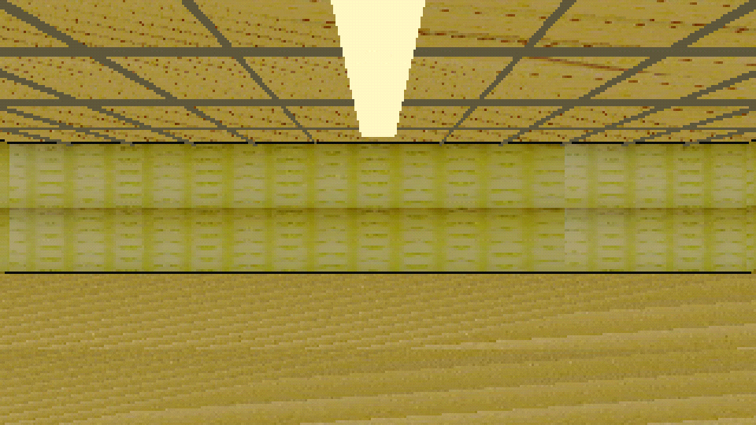
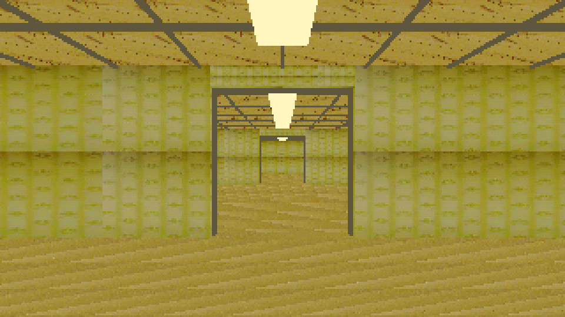

Seed 149 | 10 placements
Provisional layout proposal. The operator-accepted #160 column-to-pocket assembly remains a separate regression reference. New openings, placements, branch, and dead ends are not approved.
This build uses 4 distinct module designs and 6 repeated instances. It has one north three-opening branch, two authored terminal leaves, and no cycles. The source footage does not establish these adjacencies. Registration and scale calibration remain false.
Layout

Matched captures

accepted_pair_column_to_pocket

accepted_pair_pocket_return

accepted_pair_pocket_far_end

seed_start_connector

seed_pass_through

seed_branch_opening

seed_branch_dead_end
seed_terminal_dead_end

seed_branch_return_to_trunk
Walkthrough
From the workspace root:
godot4 --path godot_walk --rendering-driver vulkan --resolution 1280x720 res://scenes/issue149_generated_walkthrough.tscn -- --layout=res://evidence/2026-10-22-issue-149/layout_seed_149.json
Walk with WASD and mouse. Press R to return to the safe spawn. Review REPORT.md and COMMANDS.md for mechanical and resource evidence.